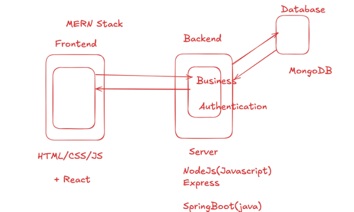

How does Internet Work?
Before Moving to How, Why do we need Internet?
To transfer data from one computer to another, a direct electronic
connection is required. The Internet is the largest such network that
connects computers worldwide.
Now, let's see how does one Computer know where to send the
data through IP Addresses.
IP Address
|
Internet Protocol(IP) Address is just like address of a computer on a
network to share data.
Since, Computer understands only 0's and 1's, IP address is a collection of bits. There are two types of IP Address:
| Message passing through IP Address |
|---|---|

|
IPv6 is still not widely used. So, For Billions of devices all over
the internet, IPv4 32 bit is not sufficient.
Two devices on the internet at different locations can have same private address. But, they will have different public IP
Now, to make it easy for humans to remember IP Address, we use Domain
Names. |
Domain Name System(DNS)
|
DNS is a hierarchical and distributed naming system that translates domain names into IP addresses. How DNS Works? E.g, If we type google.com
|

|
Mac Address
MAC (Media Access Control) Address is a unique identifier assigned to a network interface controller (NIC) for use as a network address in communications within a network segment.
It is a 48-bit address, usually represented in hexadecimal format, e.g., 00:1A:2B:3C:4D:5E.
MAC Address is used for communication within a local network segment. It is used by switches to forward data packets to the correct device on the network.
Since IP Address can change sometimes, MAC Address is used to uniquely identify a device on a network.
Suppose Agr hum message bhejte hai aur usi time hamara IP address change ho jata hai toh hmara message kisi galat device pe chala jayega.
Isliye, MAC address ka use kiya jata hai to ensure that the message reaches the correct device.
Port Number
|
Ab Agar ek hi device pe multiple applications run kar rahe hai, toh kaise pata chalega ki kaunsa data kis application ke liye hai?
|
LAN, Switch and Router

-
LAN (Local Area Network) - A LAN is a network that connects devices within a limited area, such as a home, office, or building.
It allows devices to communicate and share resources like files, printers, and internet connections. - Switch - Switch ek device hai jo multiple computers/devices ko connect karke unke beech data forward karta hai MAC address ke base par.
- Router - Router ek device hai jo multiple networks ko connect karta hai aur data packets ko unke destination IP address ke base par forward karta hai.
What is Web Development? - Client-Server Model
Internet pe hum jo bhi website visit karte hai wo Client-Server Model pe kaam karta hai.
To make these websites is the role of a Web Developer.
Client-Server Model ek architecture hai jisme client aur server ke beech communication hota hai.
Client wo device hai jo request bhejta hai aur server wo device hai jo request ko
We write code to create these websites using HTML, CSS, JavaScript for frontend and various backend technologies like Node.js, Python, PHP etc.
Mern Stack

Mern Stack is a popular web development stack that consists of four main technologies: MongoDB, Express.js, React.js, and Node.js.
- MongoDB is used as the database
- Express.js is used as the backend framework
- React.js is used as the frontend framework
- Node.js is used as the runtime environment